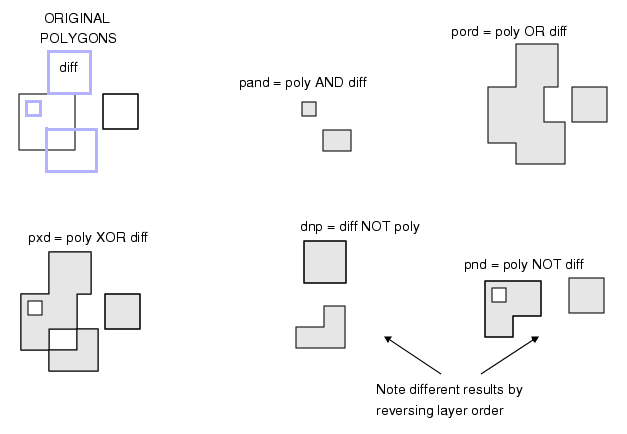
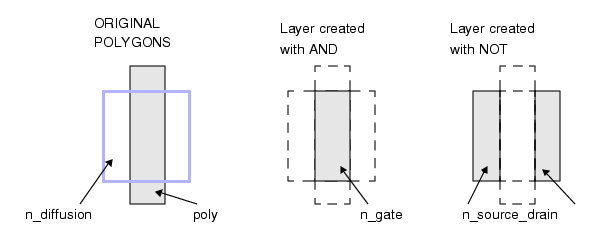
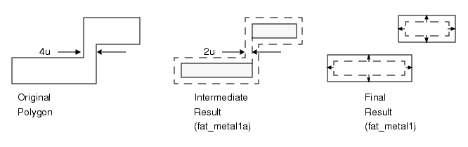
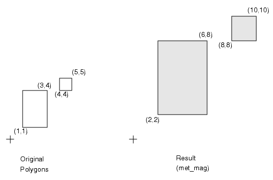
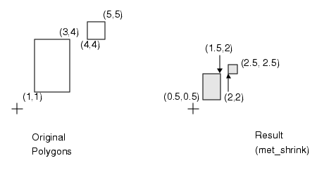

This section
contains examples of layer derivation.
Intersection of polygons on
one layer
// Checks for intersection of metal blockages.
metal_blockage_error { and metal_blockage }
// Checks for intersection of sub-cell perimeters.
// Be careful not to include the top-cell perimeter.
perimeter_error { and metal_perimeter > 2 }
Derive layer from merging overlapping
polygons
merge_layer = OR layerx
Derive layer with objects with
limited vertices
// Generate a clone of the metal layer with all polygons
// having less than 1024 vertices
not_lots_of_metal_vertices = vertex <= 1024 metal
Derive a layer by shifting a
source layer
// create a layer called met_shift that is a copy of metal,
// that is shifted right (x) by two units, and down (y) by 1.5
// units.
met_shift = SHIFT metal BY 2 -1.5
Derive transistor regions
n_diff = diffusion NOT p_dope // n+ diffusion
p_diff = diffusion AND p_dope // p+ diffusion
n_tap = n_diff NOT OUTSIDE n_well // n-tap areas
not_n_tap = n_diff OUTSIDE n_well
// Areas which are not n-taps
p_tap = p_diff OUTSIDE n_well // p-tap areas
not_p_tap = p_diff NOT OUTSIDE n_well
// Areas which are not p-taps
n_gate = poly AND not_n_tap // n-channel gates
p_gate = poly AND not_p_tap // p-channel gates
nsd = not_n_tap NOT n_gate // n-source/drain regions
psd = not_p_tap NOT p_gate // p-source/drain regions
Derive layer from intersecting
polygons in two layers
Figure 2. Layer Derivations 
Derive layers that isolate source/drain
regions
n_gate = and poly n_diffusion
n_source_drain = n_diffusion not n_gate
Figure 3. Source/Drain Regions
Derive layer of wide objects
// Find metal 1 regions where the width is greater than 4
// microns:
fat_metal1a = SIZE metal1 BY -2 // Width <= 4 goes away.
fat_metal1 = SIZE fat_metal1a BY 2
// Restore metal that didn’t go away.
Figure 4. Find Wide Metal 
Derive an enlarged or reduced
scale layer
// create a layer called met_mag that is an enlarged copy of
// metal, whose objects’ x and y coordinates are multiplied by
// 2 (a positive floating point value).
met_mag = MAGNIFY metal BY 2
Figure 5. Using Magnify to Enlarge a Layer 
// create a layer called met_shrink that is an reduced copy of
// metal, whose objects’ x and y coordinates are multiplied by
// 0.5 (a positive floating point value).
met_shrink = MAGNIFY metal BY 0.5
Figure 6. Using Magnify to Shrink a Layer 
Derive layer of gate edges along
poly
// Select gate edges along poly.
// Note that the gate layer is not explicitly generated.
poly_gate_edges = poly INSIDE EDGE diff